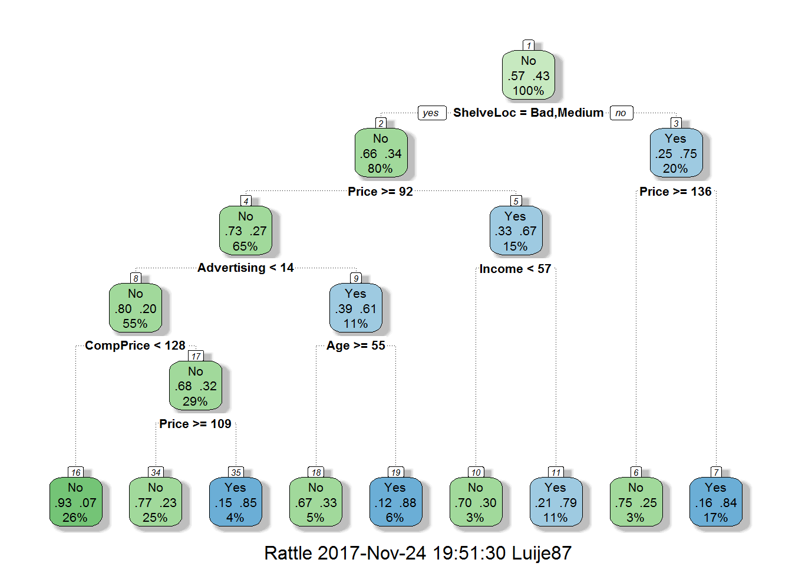

R Notebook Homework 4
Luis Acosta
Problem 1
library(rpart) #classification and regression trees
library(partykit) #treeplots## Loading required package: gridlibrary(MASS) #breast and pima indian data
library(ElemStatLearn) #prostate data
library(randomForest) #random forests## randomForest 4.6-12## Type rfNews() to see new features/changes/bug fixes.##
## Attaching package: 'randomForest'## The following object is masked from 'package:ggplot2':
##
## marginlibrary(xgboost) #gradient boosting
library(caret) #tune hyper-parameters## Loading required package: latticelibrary(rattle) #Fancy## Rattle: A free graphical interface for data science with R.
## Version 5.1.0 Copyright (c) 2006-2017 Togaware Pty Ltd.
## Type 'rattle()' to shake, rattle, and roll your data.##
## Attaching package: 'rattle'## The following object is masked from 'package:xgboost':
##
## xgboost## The following object is masked from 'package:randomForest':
##
## importancelibrary(rpart.plot) #Enhanced
library(RColorBrewer) #Color
library(party) #Alternative decision tree algorithm## Loading required package: mvtnorm## Loading required package: modeltools## Loading required package: stats4## Loading required package: strucchange## Loading required package: zoo##
## Attaching package: 'zoo'## The following objects are masked from 'package:base':
##
## as.Date, as.Date.numeric## Loading required package: sandwich##
## Attaching package: 'party'## The following objects are masked from 'package:partykit':
##
## cforest, ctree, ctree_control, edge_simple, mob, mob_control,
## node_barplot, node_bivplot, node_boxplot, node_inner,
## node_surv, node_terminalattach(iris)names(iris)## [1] "Sepal.Length" "Sepal.Width" "Petal.Length" "Petal.Width"
## [5] "Species"set.seed(123)
tree.iris <- rpart(Species ~ Sepal.Width + Petal.Width, data = iris)
print(tree.iris$cptable)## CP nsplit rel error xerror xstd
## 1 0.50 0 1.00 1.21 0.04836666
## 2 0.44 1 0.50 0.76 0.06123180
## 3 0.01 2 0.06 0.07 0.02583280cp1 <- min(tree.iris$cptable[3, ])
prune.tree.iris <- prune(tree.iris, cp <- cp1)
plot(as.party(prune.tree.iris))rparty.test <- predict(prune.tree.iris, newdata = iris, type = "class")
table(rparty.test, iris$Species)##
## rparty.test setosa versicolor virginica
## setosa 50 0 0
## versicolor 0 49 5
## virginica 0 1 45(50+49+45)/(50+49+45+6)## [1] 0.96Missclasification error equal to 4%
pairs(iris[, c("Sepal.Width", "Petal.Width")],pch=21,bg=c("red","green","blue")[unclass(Species)])The red group is well defined, every data below 0.8 belong to the red group. In the tree when
Petal.Widthis below 0.8 does not exist missclasification.The green group is well defined, but we have 5 data point from blue group mixed when
Petal.Widthis greater than 0.8 and samller than 1.75, in the tree we can see virginica representing this five values.The blue group is well defined as well when
Petal.Widthis grater or equal 1.75, but we have 1 Versicolor data point mixed with the this group as we can see in the tree.
Q: Build a decision tree where Species is a function of all variables Sepal.Width, Petal.Width, Sepal.Length, and Sepal.Length. Plot the tree. Comment on the misclassification rate in this new tree.
tree.iris2 <- rpart(Species ~ ., data = iris)cp2 <- min(tree.iris2$cptable[3, ])
prune.tree.iris2 <- prune(tree.iris2, cp <- cp2)
plot(as.party(prune.tree.iris2))rparty.test2 <- predict(prune.tree.iris2, newdata = iris, type = "class")
table(rparty.test2, iris$Species)##
## rparty.test2 setosa versicolor virginica
## setosa 50 0 0
## versicolor 0 49 5
## virginica 0 1 45(50+49+45)/(50+49+45+6)## [1] 0.96Missclasification error is equal to 4%, same result we had with Petal.Width and Speal.Width variables.
Problem 2
library(MASS)
attach(Pima.te)pima <- Pima.te
set.seed(123) #random number generator
#create training and testing sets
ind <- sample(2, nrow(pima), replace = TRUE, prob = c(0.7, 0.3))
pima.train <- pima[ind == 1, ] #the training data set
pima.test <- pima[ind == 2, ] #the test data setset.seed(123)
rf.pima <- randomForest(type ~ ., data = pima.train)
rf.pima##
## Call:
## randomForest(formula = type ~ ., data = pima.train)
## Type of random forest: classification
## Number of trees: 500
## No. of variables tried at each split: 2
##
## OOB estimate of error rate: 21.94%
## Confusion matrix:
## No Yes class.error
## No 136 20 0.1282051
## Yes 32 49 0.3950617The OOB error rate is 21.94% which is pretty hihg when we are talking about deseas.
plot(rf.pima)
ntree <- which.min(rf.pima$err.rate[, 1])
ntree## [1] 150We need 64 trees to optimize the model accuracy
rf.pima.2 <- randomForest(type ~ ., data = pima.train, ntree = ntree)
rf.pima.2##
## Call:
## randomForest(formula = type ~ ., data = pima.train, ntree = ntree)
## Type of random forest: classification
## Number of trees: 150
## No. of variables tried at each split: 2
##
## OOB estimate of error rate: 21.52%
## Confusion matrix:
## No Yes class.error
## No 136 20 0.1282051
## Yes 31 50 0.3827160rf.pima.predict <- predict(rf.pima.2, newdata = pima.test, type = "response")
table(rf.pima.predict, pima.test$type)##
## rf.pima.predict No Yes
## No 56 13
## Yes 11 15(56+15)/(56+15+11+13)## [1] 0.7473684The accuracy is 74%
varImpPlot(rf.pima.2)Problem 3
library(ISLR)
attach(Carseats)data(Carseats)
High <- with(Carseats, ifelse(Sales <= 8, "No", "Yes"))
Carseats <- data.frame(Carseats, High)set.seed(217)
#create training and testing sets
ind3 <- sample(2, nrow(Carseats), replace = TRUE, prob = c(0.7, 0.3))
carseats.train <- Carseats[ind3 == 1, ]
carseats.test <- Carseats[ind3 == 2, ]set.seed(123)
tree.carseats <- rpart(High ~ .-Sales, data = carseats.train)
tree.carseats$cptable## CP nsplit rel error xerror xstd
## 1 0.23577236 0 1.0000000 1.0000000 0.06833647
## 2 0.12195122 1 0.7642276 0.9105691 0.06733512
## 3 0.05691057 2 0.6422764 0.8536585 0.06647365
## 4 0.04065041 3 0.5853659 0.7560976 0.06456772
## 5 0.03658537 4 0.5447154 0.7560976 0.06456772
## 6 0.03252033 6 0.4715447 0.7479675 0.06438326
## 7 0.01219512 8 0.4065041 0.7317073 0.06400203
## 8 0.01000000 10 0.3821138 0.7642276 0.06474813cp3 <- min(tree.carseats$cptable[7, ])
prune.tree.carseats <- prune(tree.carseats, cp <- cp3)
fancyRpartPlot(prune.tree.carseats)
rparty.test3 <- predict(prune.tree.carseats, newdata = carseats.test, type = "class")
table(rparty.test3, carseats.test$High)##
## rparty.test3 No Yes
## No 65 9
## Yes 5 32The accuracy we get here is
(65+32)/(65+32+14)## [1] 0.8738739